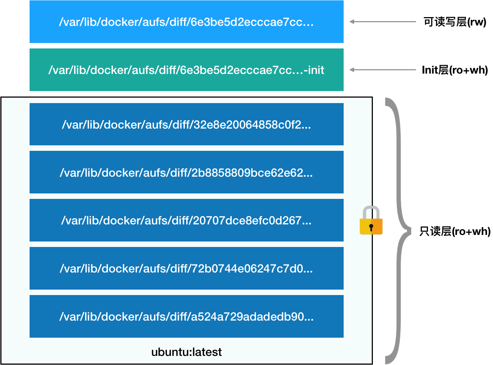

- 00 开篇词 打通“容器技术”的任督二脉.md.html
- 01 预习篇 · 小鲸鱼大事记（一）：初出茅庐.md.html
- 02 预习篇 · 小鲸鱼大事记（二）：崭露头角.md.html
- 03 预习篇 · 小鲸鱼大事记（三）：群雄并起.md.html
- 04 预习篇 · 小鲸鱼大事记（四）：尘埃落定.md.html
- 05 白话容器基础（一）：从进程说开去.md.html
- 06 白话容器基础（二）：隔离与限制.md.html
- 07 白话容器基础（三）：深入理解容器镜像.md.html
- 08 白话容器基础（四）：重新认识Docker容器.md.html
- 09 从容器到容器云：谈谈Kubernetes的本质.md.html
- 10 Kubernetes一键部署利器：kubeadm.md.html
- 11 从0到1：搭建一个完整的Kubernetes集群.md.html
- 12 牛刀小试：我的第一个容器化应用.md.html
- 13 为什么我们需要Pod？.md.html
- 14 深入解析Pod对象（一）：基本概念.md.html
- 15 深入解析Pod对象（二）：使用进阶.md.html
- 16 编排其实很简单：谈谈“控制器”模型.md.html
- 17 经典PaaS的记忆：作业副本与水平扩展.md.html
- 18 深入理解StatefulSet（一）：拓扑状态.md.html
- 19 深入理解StatefulSet（二）：存储状态.md.html
- 20 深入理解StatefulSet（三）：有状态应用实践.md.html
- 21 容器化守护进程的意义：DaemonSet.md.html
- 22 撬动离线业务：Job与CronJob.md.html
- 23 声明式API与Kubernetes编程范式.md.html
- 24 深入解析声明式API（一）：API对象的奥秘.md.html
- 25 深入解析声明式API（二）：编写自定义控制器.md.html
- 26 基于角色的权限控制：RBAC.md.html
- 27 聪明的微创新：Operator工作原理解读.md.html
- 28 PV、PVC、StorageClass，这些到底在说啥？.md.html
- 29 PV、PVC体系是不是多此一举？从本地持久化卷谈起.md.html
- 30 编写自己的存储插件：FlexVolume与CSI.md.html
- 31 容器存储实践：CSI插件编写指南.md.html
- 32 浅谈容器网络.md.html
- 33 深入解析容器跨主机网络.md.html
- 34 Kubernetes网络模型与CNI网络插件.md.html
- 35 解读Kubernetes三层网络方案.md.html
- 36 为什么说Kubernetes只有soft multi-tenancy？.md.html
- 37 找到容器不容易：Service、DNS与服务发现.md.html
- 38 从外界连通Service与Service调试“三板斧”.md.html
- 39 谈谈Service与Ingress.md.html
- 40 Kubernetes的资源模型与资源管理.md.html
- 41 十字路口上的Kubernetes默认调度器.md.html
- 42 Kubernetes默认调度器调度策略解析.md.html
- 43 Kubernetes默认调度器的优先级与抢占机制.md.html
- 44 Kubernetes GPU管理与Device Plugin机制.md.html
- 45 幕后英雄：SIG-Node与CRI.md.html
- 46 解读 CRI 与 容器运行时.md.html
- 47 绝不仅仅是安全：Kata Containers 与 gVisor.md.html
- 48 Prometheus、Metrics Server与Kubernetes监控体系.md.html
- 49 Custom Metrics_ 让Auto Scaling不再“食之无味”.md.html
- 50 让日志无处可逃：容器日志收集与管理.md.html
- 51 谈谈Kubernetes开源社区和未来走向.md.html
- 52 答疑：在问题中解决问题，在思考中产生思考.md.html
- 特别放送 2019 年，容器技术生态会发生些什么？.md.html
- 特别放送 基于 Kubernetes 的云原生应用管理，到底应该怎么做？.md.html
- 结束语 Kubernetes：赢开发者赢天下.md.html
- 捐赠
07 白话容器基础（三）：深入理解容器镜像
你好，我是张磊。我在今天这篇文章的最后，放置了一张Kubernetes的技能图谱，希望对你有帮助。
在前两次的分享中，我讲解了Linux容器最基础的两种技术：Namespace和Cgroups。希望此时，你已经彻底理解了“容器的本质是一种特殊的进程”这个最重要的概念。
而正如我前面所说的，Namespace的作用是“隔离”，它让应用进程只能看到该Namespace内的“世界”；而Cgroups的作用是“限制”，它给这个“世界”围上了一圈看不见的墙。这么一折腾，进程就真的被“装”在了一个与世隔绝的房间里，而这些房间就是PaaS项目赖以生存的应用“沙盒”。
可是，还有一个问题不知道你有没有仔细思考过：这个房间四周虽然有了墙，但是如果容器进程低头一看地面，又是怎样一副景象呢？
换句话说，容器里的进程看到的文件系统又是什么样子的呢？
可能你立刻就能想到，这一定是一个关于Mount Namespace的问题：容器里的应用进程，理应看到一份完全独立的文件系统。这样，它就可以在自己的容器目录（比如/tmp）下进行操作，而完全不会受宿主机以及其他容器的影响。
那么，真实情况是这样吗？
“左耳朵耗子”叔在多年前写的一篇关于Docker基础知识的博客里，曾经介绍过一段小程序。这段小程序的作用是，在创建子进程时开启指定的Namespace。
下面，我们不妨使用它来验证一下刚刚提到的问题。
#define _GNU_SOURCE
#include <sys/mount.h>
#include <sys/types.h>
#include <sys/wait.h>
#include <stdio.h>
#include <sched.h>
#include <signal.h>
#include <unistd.h>
#define STACK_SIZE (1024 * 1024)
static char container_stack[STACK_SIZE];
char* const container_args[] = {
"/bin/bash",
NULL
};
int container_main(void* arg)
{
printf("Container - inside the container!\n");
execv(container_args[0], container_args);
printf("Something's wrong!\n");
return 1;
}
int main()
{
printf("Parent - start a container!\n");
int container_pid = clone(container_main, container_stack+STACK_SIZE, CLONE_NEWNS | SIGCHLD , NULL);
waitpid(container_pid, NULL, 0);
printf("Parent - container stopped!\n");
return 0;
}
这段代码的功能非常简单：在main函数里，我们通过clone()系统调用创建了一个新的子进程container_main，并且声明要为它启用Mount Namespace（即：CLONE_NEWNS标志）。
而这个子进程执行的，是一个“/bin/bash”程序，也就是一个shell。所以这个shell就运行在了Mount Namespace的隔离环境中。
我们来一起编译一下这个程序：
$ gcc -o ns ns.c
$ ./ns
Parent - start a container!
Container - inside the container!
这样，我们就进入了这个“容器”当中。可是，如果在“容器”里执行一下ls指令的话，我们就会发现一个有趣的现象： /tmp目录下的内容跟宿主机的内容是一样的。
$ ls /tmp
# 你会看到好多宿主机的文件
也就是说：
即使开启了Mount Namespace，容器进程看到的文件系统也跟宿主机完全一样。
这是怎么回事呢？
仔细思考一下，你会发现这其实并不难理解：Mount Namespace修改的，是容器进程对文件系统“挂载点”的认知。但是，这也就意味着，只有在“挂载”这个操作发生之后，进程的视图才会被改变。而在此之前，新创建的容器会直接继承宿主机的各个挂载点。
这时，你可能已经想到了一个解决办法：创建新进程时，除了声明要启用Mount Namespace之外，我们还可以告诉容器进程，有哪些目录需要重新挂载，就比如这个/tmp目录。于是，我们在容器进程执行前可以添加一步重新挂载 /tmp目录的操作：
int container_main(void* arg)
{
printf("Container - inside the container!\n");
// 如果你的机器的根目录的挂载类型是shared，那必须先重新挂载根目录
// mount("", "/", NULL, MS_PRIVATE, "");
mount("none", "/tmp", "tmpfs", 0, "");
execv(container_args[0], container_args);
printf("Something's wrong!\n");
return 1;
}
可以看到，在修改后的代码里，我在容器进程启动之前，加上了一句mount(“none”, “/tmp”, “tmpfs”, 0, “”)语句。就这样，我告诉了容器以tmpfs（内存盘）格式，重新挂载了/tmp目录。
这段修改后的代码，编译执行后的结果又如何呢？我们可以试验一下：
$ gcc -o ns ns.c
$ ./ns
Parent - start a container!
Container - inside the container!
$ ls /tmp
可以看到，这次/tmp变成了一个空目录，这意味着重新挂载生效了。我们可以用mount -l检查一下：
$ mount -l | grep tmpfs
none on /tmp type tmpfs (rw,relatime)
可以看到，容器里的/tmp目录是以tmpfs方式单独挂载的。
更重要的是，因为我们创建的新进程启用了Mount Namespace，所以这次重新挂载的操作，只在容器进程的Mount Namespace中有效。如果在宿主机上用mount -l来检查一下这个挂载，你会发现它是不存在的：
# 在宿主机上
$ mount -l | grep tmpfs
这就是Mount Namespace跟其他Namespace的使用略有不同的地方：它对容器进程视图的改变，一定是伴随着挂载操作（mount）才能生效。
可是，作为一个普通用户，我们希望的是一个更友好的情况：每当创建一个新容器时，我希望容器进程看到的文件系统就是一个独立的隔离环境，而不是继承自宿主机的文件系统。怎么才能做到这一点呢？
不难想到，我们可以在容器进程启动之前重新挂载它的整个根目录“/”。而由于Mount Namespace的存在，这个挂载对宿主机不可见，所以容器进程就可以在里面随便折腾了。
在Linux操作系统里，有一个名为chroot的命令可以帮助你在shell中方便地完成这个工作。顾名思义，它的作用就是帮你“change root file system”，即改变进程的根目录到你指定的位置。它的用法也非常简单。
假设，我们现在有一个$HOME/test目录，想要把它作为一个/bin/bash进程的根目录。
首先，创建一个test目录和几个lib文件夹：
$ mkdir -p $HOME/test
$ mkdir -p $HOME/test/{bin,lib64,lib}
$ cd $T
然后，把bash命令拷贝到test目录对应的bin路径下：
$ cp -v /bin/{bash,ls} $HOME/test/bin
接下来，把bash命令需要的所有so文件，也拷贝到test目录对应的lib路径下。找到so文件可以用ldd 命令：
$ T=$HOME/test
$ list="$(ldd /bin/ls | egrep -o '/lib.*.[0-9]')"
$ for i in $list; do cp -v "$i" "${T}${i}"; done
最后，执行chroot命令，告诉操作系统，我们将使用$HOME/test目录作为/bin/bash进程的根目录：
$ chroot $HOME/test /bin/bash
这时，你如果执行”ls /“，就会看到，它返回的都是$HOME/test目录下面的内容，而不是宿主机的内容。
更重要的是，对于被chroot的进程来说，它并不会感受到自己的根目录已经被“修改”成$HOME/test了。
这种视图被修改的原理，是不是跟我之前介绍的Linux Namespace很类似呢？
没错！
实际上，Mount Namespace正是基于对chroot的不断改良才被发明出来的，它也是Linux操作系统里的第一个Namespace。
当然，为了能够让容器的这个根目录看起来更“真实”，我们一般会在这个容器的根目录下挂载一个完整操作系统的文件系统，比如Ubuntu16.04的ISO。这样，在容器启动之后，我们在容器里通过执行”ls /“查看根目录下的内容，就是Ubuntu 16.04的所有目录和文件。
而这个挂载在容器根目录上、用来为容器进程提供隔离后执行环境的文件系统，就是所谓的“容器镜像”。它还有一个更为专业的名字，叫作：rootfs（根文件系统）。
所以，一个最常见的rootfs，或者说容器镜像，会包括如下所示的一些目录和文件，比如/bin，/etc，/proc等等：
$ ls /
bin dev etc home lib lib64 mnt opt proc root run sbin sys tmp usr var
而你进入容器之后执行的/bin/bash，就是/bin目录下的可执行文件，与宿主机的/bin/bash完全不同。
现在，你应该可以理解，对Docker项目来说，它最核心的原理实际上就是为待创建的用户进程：
启用Linux Namespace配置；
设置指定的Cgroups参数；
切换进程的根目录（Change Root）。
这样，一个完整的容器就诞生了。不过，Docker项目在最后一步的切换上会优先使用pivot_root系统调用，如果系统不支持，才会使用chroot。这两个系统调用虽然功能类似，但是也有细微的区别，这一部分小知识就交给你课后去探索了。
另外，需要明确的是，rootfs只是一个操作系统所包含的文件、配置和目录，并不包括操作系统内核。在Linux操作系统中，这两部分是分开存放的，操作系统只有在开机启动时才会加载指定版本的内核镜像。
所以说，rootfs只包括了操作系统的“躯壳”，并没有包括操作系统的“灵魂”。
那么，对于容器来说，这个操作系统的“灵魂”又在哪里呢？
实际上，同一台机器上的所有容器，都共享宿主机操作系统的内核。
这就意味着，如果你的应用程序需要配置内核参数、加载额外的内核模块，以及跟内核进行直接的交互，你就需要注意了：这些操作和依赖的对象，都是宿主机操作系统的内核，它对于该机器上的所有容器来说是一个“全局变量”，牵一发而动全身。
这也是容器相比于虚拟机的主要缺陷之一：毕竟后者不仅有模拟出来的硬件机器充当沙盒，而且每个沙盒里还运行着一个完整的Guest OS给应用随便折腾。
不过，正是由于rootfs的存在，容器才有了一个被反复宣传至今的重要特性：一致性。
什么是容器的“一致性”呢？
我在专栏的第一篇文章《小鲸鱼大事记（一）：初出茅庐》中曾经提到过：由于云端与本地服务器环境不同，应用的打包过程，一直是使用PaaS时最“痛苦”的一个步骤。
但有了容器之后，更准确地说，有了容器镜像（即rootfs）之后，这个问题被非常优雅地解决了。
由于rootfs里打包的不只是应用，而是整个操作系统的文件和目录，也就意味着，应用以及它运行所需要的所有依赖，都被封装在了一起。
事实上，对于大多数开发者而言，他们对应用依赖的理解，一直局限在编程语言层面。比如Golang的Godeps.json。但实际上，一个一直以来很容易被忽视的事实是，对一个应用来说，操作系统本身才是它运行所需要的最完整的“依赖库”。
有了容器镜像“打包操作系统”的能力，这个最基础的依赖环境也终于变成了应用沙盒的一部分。这就赋予了容器所谓的一致性：无论在本地、云端，还是在一台任何地方的机器上，用户只需要解压打包好的容器镜像，那么这个应用运行所需要的完整的执行环境就被重现出来了。
这种深入到操作系统级别的运行环境一致性，打通了应用在本地开发和远端执行环境之间难以逾越的鸿沟。
不过，这时你可能已经发现了另一个非常棘手的问题：难道我每开发一个应用，或者升级一下现有的应用，都要重复制作一次rootfs吗？
比如，我现在用Ubuntu操作系统的ISO做了一个rootfs，然后又在里面安装了Java环境，用来部署我的Java应用。那么，我的另一个同事在发布他的Java应用时，显然希望能够直接使用我安装过Java环境的rootfs，而不是重复这个流程。
一种比较直观的解决办法是，我在制作rootfs的时候，每做一步“有意义”的操作，就保存一个rootfs出来，这样其他同事就可以按需求去用他需要的rootfs了。
但是，这个解决办法并不具备推广性。原因在于，一旦你的同事们修改了这个rootfs，新旧两个rootfs之间就没有任何关系了。这样做的结果就是极度的碎片化。
那么，既然这些修改都基于一个旧的rootfs，我们能不能以增量的方式去做这些修改呢？这样做的好处是，所有人都只需要维护相对于base rootfs修改的增量内容，而不是每次修改都制造一个“fork”。
答案当然是肯定的。
这也正是为何，Docker公司在实现Docker镜像时并没有沿用以前制作rootfs的标准流程，而是做了一个小小的创新：
Docker在镜像的设计中，引入了层（layer）的概念。也就是说，用户制作镜像的每一步操作，都会生成一个层，也就是一个增量rootfs。
当然，这个想法不是凭空臆造出来的，而是用到了一种叫作联合文件系统（Union File System）的能力。
Union File System也叫UnionFS，最主要的功能是将多个不同位置的目录联合挂载（union mount）到同一个目录下。比如，我现在有两个目录A和B，它们分别有两个文件：
$ tree
.
├── A
│ ├── a
│ └── x
└── B
├── b
└── x
然后，我使用联合挂载的方式，将这两个目录挂载到一个公共的目录C上：
$ mkdir C
$ mount -t aufs -o dirs=./A:./B none ./C
这时，我再查看目录C的内容，就能看到目录A和B下的文件被合并到了一起：
$ tree ./C
./C
├── a
├── b
└── x
可以看到，在这个合并后的目录C里，有a、b、x三个文件，并且x文件只有一份。这，就是“合并”的含义。此外，如果你在目录C里对a、b、x文件做修改，这些修改也会在对应的目录A、B中生效。
那么，在Docker项目中，又是如何使用这种Union File System的呢？
我的环境是Ubuntu 16.04和Docker CE 18.05，这对组合默认使用的是AuFS这个联合文件系统的实现。你可以通过docker info命令，查看到这个信息。
AuFS的全称是Another UnionFS，后改名为Alternative UnionFS，再后来干脆改名叫作Advance UnionFS，从这些名字中你应该能看出这样两个事实：
它是对Linux原生UnionFS的重写和改进；
它的作者怨气好像很大。我猜是Linus Torvalds（Linux之父）一直不让AuFS进入Linux内核主干的缘故，所以我们只能在Ubuntu和Debian这些发行版上使用它。
对于AuFS来说，它最关键的目录结构在/var/lib/docker路径下的diff目录：
/var/lib/docker/aufs/diff/<layer_id>
而这个目录的作用，我们不妨通过一个具体例子来看一下。
现在，我们启动一个容器，比如：
$ docker run -d ubuntu:latest sleep 3600
这时候，Docker就会从Docker Hub上拉取一个Ubuntu镜像到本地。
这个所谓的“镜像”，实际上就是一个Ubuntu操作系统的rootfs，它的内容是Ubuntu操作系统的所有文件和目录。不过，与之前我们讲述的rootfs稍微不同的是，Docker镜像使用的rootfs，往往由多个“层”组成：
$ docker image inspect ubuntu:latest
...
"RootFS": {
"Type": "layers",
"Layers": [
"sha256:f49017d4d5ce9c0f544c...",
"sha256:8f2b771487e9d6354080...",
"sha256:ccd4d61916aaa2159429...",
"sha256:c01d74f99de40e097c73...",
"sha256:268a067217b5fe78e000..."
]
}
可以看到，这个Ubuntu镜像，实际上由五个层组成。这五个层就是五个增量rootfs，每一层都是Ubuntu操作系统文件与目录的一部分；而在使用镜像时，Docker会把这些增量联合挂载在一个统一的挂载点上（等价于前面例子里的“/C”目录）。
这个挂载点就是/var/lib/docker/aufs/mnt/，比如：
/var/lib/docker/aufs/mnt/6e3be5d2ecccae7cc0fcfa2a2f5c89dc21ee30e166be823ceaeba15dce645b3e
不出意外的，这个目录里面正是一个完整的Ubuntu操作系统：
$ ls /var/lib/docker/aufs/mnt/6e3be5d2ecccae7cc0fcfa2a2f5c89dc21ee30e166be823ceaeba15dce645b3e
bin boot dev etc home lib lib64 media mnt opt proc root run sbin srv sys tmp usr var
那么，前面提到的五个镜像层，又是如何被联合挂载成这样一个完整的Ubuntu文件系统的呢？
这个信息记录在AuFS的系统目录/sys/fs/aufs下面。
首先，通过查看AuFS的挂载信息，我们可以找到这个目录对应的AuFS的内部ID（也叫：si）：
$ cat /proc/mounts| grep aufs
none /var/lib/docker/aufs/mnt/6e3be5d2ecccae7cc0fc... aufs rw,relatime,si=972c6d361e6b32ba,dio,dirperm1 0 0
即，si=972c6d361e6b32ba。
然后使用这个ID，你就可以在/sys/fs/aufs下查看被联合挂载在一起的各个层的信息：
$ cat /sys/fs/aufs/si_972c6d361e6b32ba/br[0-9]*
/var/lib/docker/aufs/diff/6e3be5d2ecccae7cc...=rw
/var/lib/docker/aufs/diff/6e3be5d2ecccae7cc...-init=ro+wh
/var/lib/docker/aufs/diff/32e8e20064858c0f2...=ro+wh
/var/lib/docker/aufs/diff/2b8858809bce62e62...=ro+wh
/var/lib/docker/aufs/diff/20707dce8efc0d267...=ro+wh
/var/lib/docker/aufs/diff/72b0744e06247c7d0...=ro+wh
/var/lib/docker/aufs/diff/a524a729adadedb90...=ro+wh
从这些信息里，我们可以看到，镜像的层都放置在/var/lib/docker/aufs/diff目录下，然后被联合挂载在/var/lib/docker/aufs/mnt里面。
而且，从这个结构可以看出来，这个容器的rootfs由如下图所示的三部分组成：

第一部分，只读层。
它是这个容器的rootfs最下面的五层，对应的正是ubuntu:latest镜像的五层。可以看到，它们的挂载方式都是只读的（ro+wh，即readonly+whiteout，至于什么是whiteout，我下面马上会讲到）。
这时，我们可以分别查看一下这些层的内容：
$ ls /var/lib/docker/aufs/diff/72b0744e06247c7d0...
etc sbin usr var
$ ls /var/lib/docker/aufs/diff/32e8e20064858c0f2...
run
$ ls /var/lib/docker/aufs/diff/a524a729adadedb900...
bin boot dev etc home lib lib64 media mnt opt proc root run sbin srv sys tmp usr var
可以看到，这些层，都以增量的方式分别包含了Ubuntu操作系统的一部分。
第二部分，可读写层。
它是这个容器的rootfs最上面的一层（6e3be5d2ecccae7cc），它的挂载方式为：rw，即read write。在没有写入文件之前，这个目录是空的。而一旦在容器里做了写操作，你修改产生的内容就会以增量的方式出现在这个层中。
可是，你有没有想到这样一个问题：如果我现在要做的，是删除只读层里的一个文件呢？
为了实现这样的删除操作，AuFS会在可读写层创建一个whiteout文件，把只读层里的文件“遮挡”起来。
比如，你要删除只读层里一个名叫foo的文件，那么这个删除操作实际上是在可读写层创建了一个名叫.wh.foo的文件。这样，当这两个层被联合挂载之后，foo文件就会被.wh.foo文件“遮挡”起来，“消失”了。这个功能，就是“ro+wh”的挂载方式，即只读+whiteout的含义。我喜欢把whiteout形象地翻译为：“白障”。
所以，最上面这个可读写层的作用，就是专门用来存放你修改rootfs后产生的增量，无论是增、删、改，都发生在这里。而当我们使用完了这个被修改过的容器之后，还可以使用docker commit和push指令，保存这个被修改过的可读写层，并上传到Docker Hub上，供其他人使用；而与此同时，原先的只读层里的内容则不会有任何变化。这，就是增量rootfs的好处。
第三部分，Init层。
它是一个以“-init”结尾的层，夹在只读层和读写层之间。Init层是Docker项目单独生成的一个内部层，专门用来存放/etc/hosts、/etc/resolv.conf等信息。
需要这样一层的原因是，这些文件本来属于只读的Ubuntu镜像的一部分，但是用户往往需要在启动容器时写入一些指定的值比如hostname，所以就需要在可读写层对它们进行修改。
可是，这些修改往往只对当前的容器有效，我们并不希望执行docker commit时，把这些信息连同可读写层一起提交掉。
所以，Docker做法是，在修改了这些文件之后，以一个单独的层挂载了出来。而用户执行docker commit只会提交可读写层，所以是不包含这些内容的。
最终，这7个层都被联合挂载到/var/lib/docker/aufs/mnt目录下，表现为一个完整的Ubuntu操作系统供容器使用。
总结
在今天的分享中，我着重介绍了Linux容器文件系统的实现方式。而这种机制，正是我们经常提到的容器镜像，也叫作：rootfs。它只是一个操作系统的所有文件和目录，并不包含内核，最多也就几百兆。而相比之下，传统虚拟机的镜像大多是一个磁盘的“快照”，磁盘有多大，镜像就至少有多大。
通过结合使用Mount Namespace和rootfs，容器就能够为进程构建出一个完善的文件系统隔离环境。当然，这个功能的实现还必须感谢chroot和pivot_root这两个系统调用切换进程根目录的能力。
而在rootfs的基础上，Docker公司创新性地提出了使用多个增量rootfs联合挂载一个完整rootfs的方案，这就是容器镜像中“层”的概念。
通过“分层镜像”的设计，以Docker镜像为核心，来自不同公司、不同团队的技术人员被紧密地联系在了一起。而且，由于容器镜像的操作是增量式的，这样每次镜像拉取、推送的内容，比原本多个完整的操作系统的大小要小得多；而共享层的存在，可以使得所有这些容器镜像需要的总空间，也比每个镜像的总和要小。这样就使得基于容器镜像的团队协作，要比基于动则几个GB的虚拟机磁盘镜像的协作要敏捷得多。
更重要的是，一旦这个镜像被发布，那么你在全世界的任何一个地方下载这个镜像，得到的内容都完全一致，可以完全复现这个镜像制作者当初的完整环境。这，就是容器技术“强一致性”的重要体现。
而这种价值正是支撑Docker公司在2014~2016年间迅猛发展的核心动力。容器镜像的发明，不仅打通了“开发-测试-部署”流程的每一个环节，更重要的是：
容器镜像将会成为未来软件的主流发布方式。
思考题
既然容器的rootfs（比如，Ubuntu镜像），是以只读方式挂载的，那么又如何在容器里修改Ubuntu镜像的内容呢？（提示：Copy-on-Write）
除了AuFS，你知道Docker项目还支持哪些UnionFS实现吗？你能说出不同宿主机环境下推荐使用哪种实现吗？
© 2019 - 2023 Liangliang Lee. Powered by gin and hexo-theme-book.